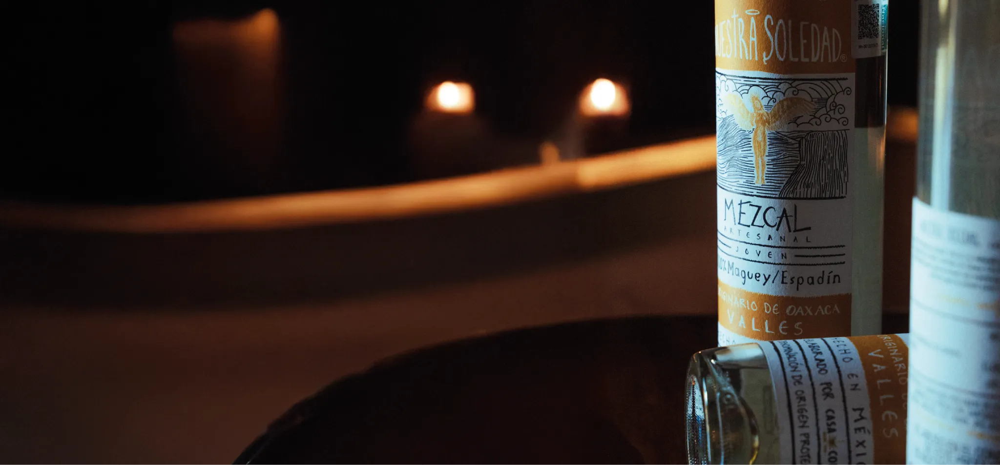
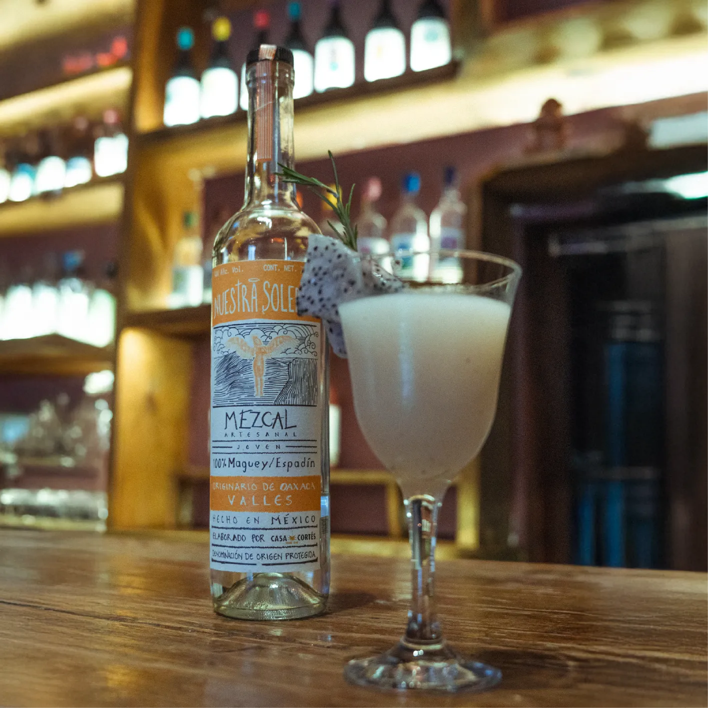
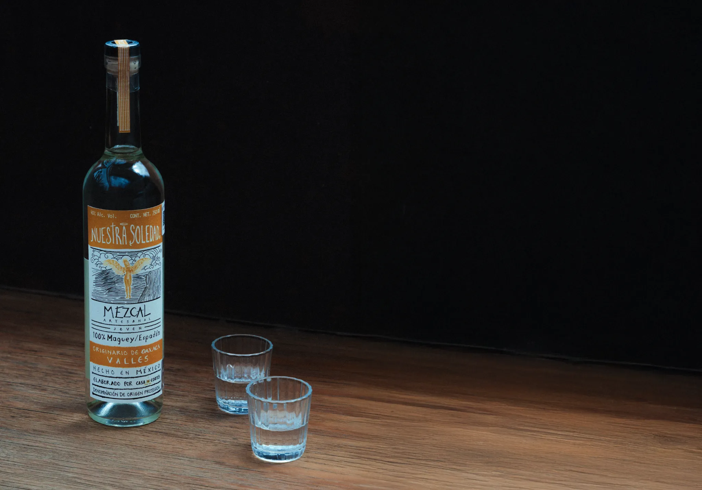
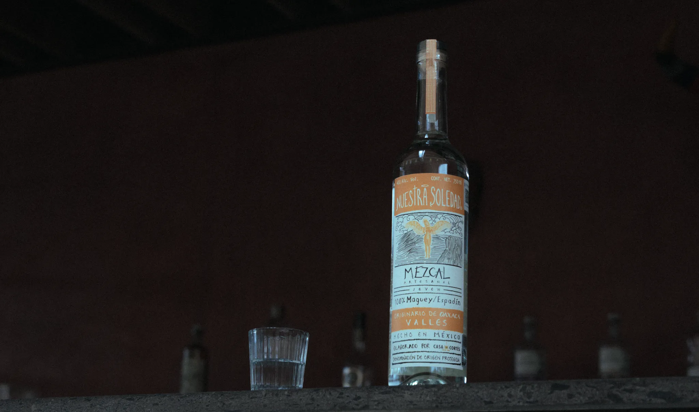
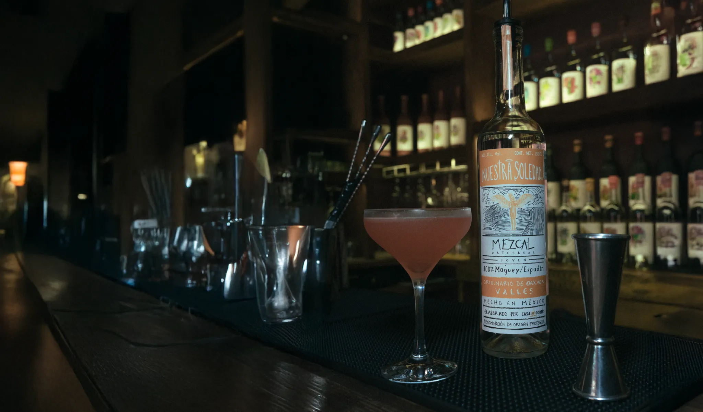

Nuestro origen
Valles nace de una profunda investigación en torno al Maguey Espadín para explorar nuevas formas de disfrutar el mezcal.

Nuestro mezcal
Con un perfil suave y elegante, Valles permite apreciar la complejidad del Espadín y descubrir sus matices al degustarlo solo.
A la vez, su equilibrio y versatilidad lo convierten en una expresión ideal para la coctelería de autor, donde el mezcal es protagonista.
CosechaMaguey semicultivado
CocciónHorno subterráneo de piedra volcánica
Molienda

TahonaFermentación

Tinas de madera al aire libreDestilaciónDoble destilación en alambique de cobre


